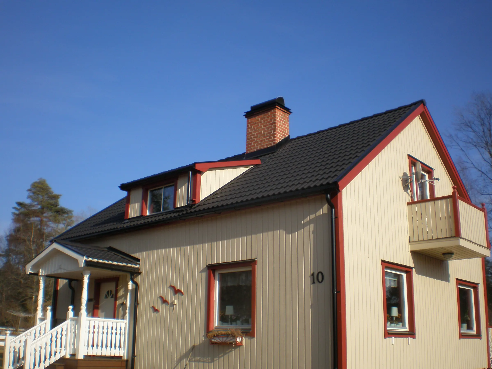
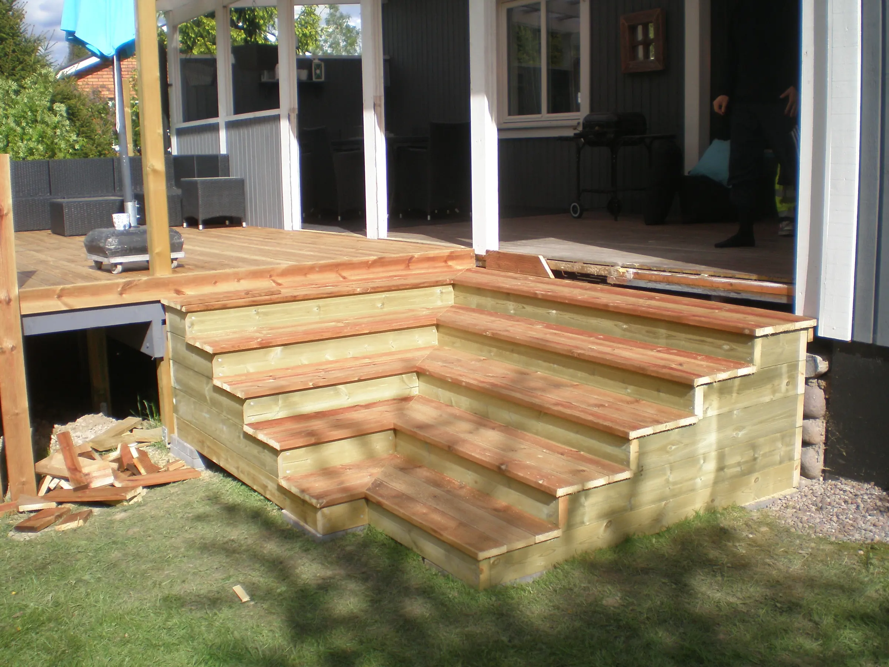
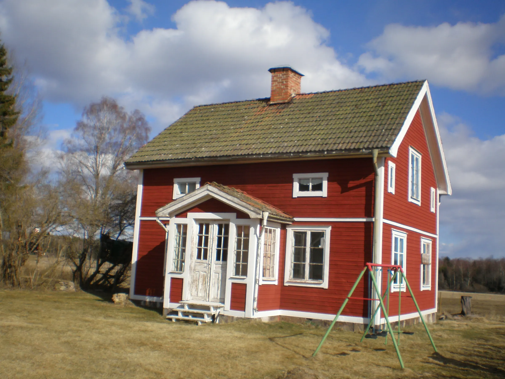
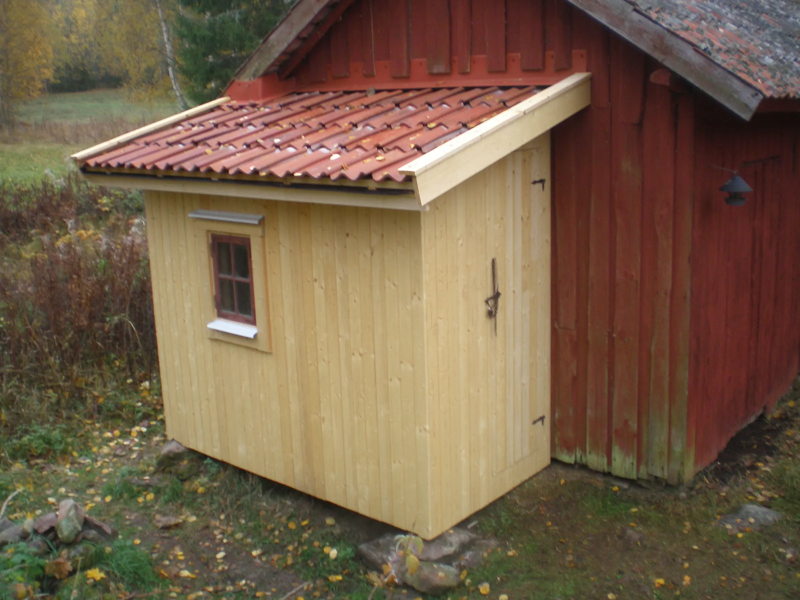

Våra arbeten
Hus, uteplatser
och det däremellan.
Ett urval av Folkare Byggs bilder. Klicka på ett fotografi för att se det större och bläddra vidare.


Visa bild

Visa bild Visa bild
Visa bild

Visa bild

Visa bildDitt nästa steg
Berätta vad du
har i tankarna.
Vi hjälper dig att ta nästa steg. Ring oss eller beskriv ditt projekt i ett mejl.